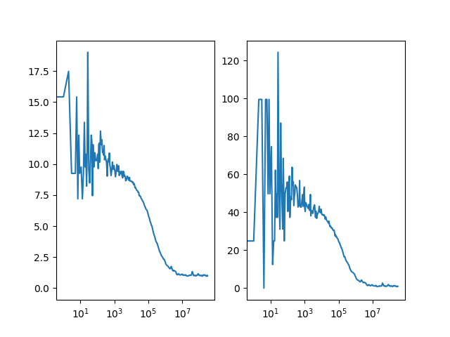

Note
Click here to download the full example code
Micro time gated correlation¶
The micro time gating example can be easily modified to correlate the prompt and the delayed excitation in a pulsed interleaved excitation experiment by changing the selection on the weights.

import pylab as p
import tttrlib
import numpy as np
fig, ax = p.subplots(nrows=1, ncols=2)
# Read the data data
data = tttrlib.TTTR('../../test/data/bh/bh_spc132.spc', 'SPC-130')
# Create correlator
B = 9
n_casc = 25
correlator = tttrlib.Correlator()
correlator.n_bins = B
correlator.n_casc = n_casc
# Select the green channels (channel number 0 and 8)
ch1_indeces = data.get_selection_by_channel([0])
ch2_indeces = data.get_selection_by_channel([8])
# green-red cross-correlation
t = data.get_macro_time()
t1 = t[ch1_indeces]
w1 = np.ones_like(t1, dtype=np.float)
t2 = t[ch2_indeces]
w2 = np.ones_like(t2, dtype=np.float)
correlator.set_events(t1, w1, t2, w2)
correlator.run()
x = correlator.get_x_axis_normalized()
y = correlator.get_corr_normalized()
ax[0].semilogx(x, y)
# Mask
t = data.get_macro_time()
mt = data.get_micro_time()
t1 = t[ch1_indeces]
mt1 = mt[ch1_indeces]
w1 = np.ones_like(t1, dtype=np.float)
# This sets the weight where the micro time is smaller than 1500
# to zero and masks the photons
w1[np.where(mt1 < 1500)] *= 0.0
t2 = t[ch2_indeces]
mt2 = mt[ch2_indeces]
w2 = np.ones_like(t2, dtype=np.float)
w2[np.where(mt2 < 1500)] *= 0.0
correlator.set_events(t1, w1, t2, w2)
correlator.run()
x = correlator.get_x_axis_normalized()
y = correlator.get_corr_normalized()
ax[1].semilogx(x, y)
p.show()
Total running time of the script: ( 0 minutes 0.376 seconds)